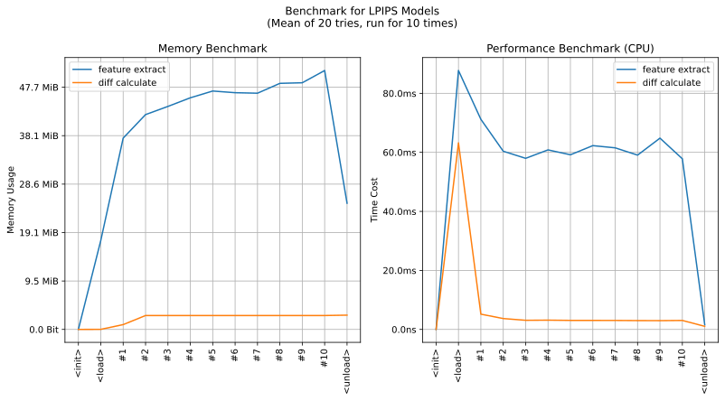
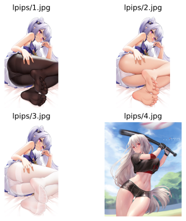

imgutils.metrics.lpips
- Overview:
Useful utilities based on richzhang/PerceptualSimilarity, tested with dataset deepghs/chafen_arknights(private).
When threshold is 0.45, the adjusted rand score can reach 0.995.
This is an overall benchmark of all the operations in LPIPS models:

lpips_extract_feature
- imgutils.metrics.lpips.lpips_extract_feature(image: str | PathLike | bytes | bytearray | BinaryIO | Image | List[str | PathLike | bytes | bytearray | BinaryIO | Image] | Tuple[str | PathLike | bytes | bytearray | BinaryIO | Image, ...]) Tuple[ndarray, ndarray, ndarray, ndarray, ndarray][source]
- Overview:
Extract feature from images.
- Parameters:
image – One or multiple images to extract features.
- Returns:
Extracted features, should be a tuple of 5 arrays which extracted from CNN.
- Example:
>>> from imgutils.metrics import lpips_extract_feature >>> >>> f1, f2, f3, f4, f5 = lpips_extract_feature('lpips/1.jpg') >>> (f1.shape, f2.shape, f3.shape, f4.shape, f4.shape) ((1, 64, 99, 99), (1, 192, 49, 49), (1, 384, 24, 24), (1, 256, 24, 24), (1, 256, 24, 24)) >>> f1, f2, f3, f4, f5 = lpips_extract_feature(['lpips/1.jpg', 'lpips/4.jpg', 'lpips/7.jpg']) >>> (f1.shape, f2.shape, f3.shape, f4.shape, f4.shape) ((3, 64, 99, 99), (3, 192, 49, 49), (3, 384, 24, 24), (3, 256, 24, 24), (3, 256, 24, 24))
Note
This feature can be used in
lpips_difference()andlpips_clustering().
lpips_difference
- imgutils.metrics.lpips.lpips_difference(img1: str | PathLike | bytes | bytearray | BinaryIO | Image | Tuple[ndarray, ...], img2: str | PathLike | bytes | bytearray | BinaryIO | Image | Tuple[ndarray, ...]) float[source]
- Overview:
Calculate LPIPS difference between images.
- Parameters:
img1 – Image file, PIL object or extracted feature of image.
img2 – Image file, PIL object or extracted feature of another image.
- Returns:
LPIPS difference. Value lower than
0.45usually represents similar.
- Example:
Here are some images for example
>>> from imgutils.metrics import lpips_difference >>> >>> lpips_difference('lpips/1.jpg', 'lpips/2.jpg') 0.16922694444656372 >>> lpips_difference('lpips/1.jpg', 'lpips/3.jpg') 0.22250649333000183 >>> lpips_difference('lpips/1.jpg', 'lpips/4.jpg') # not similar 0.6897575259208679 >>> lpips_difference('lpips/2.jpg', 'lpips/3.jpg') 0.10956494510173798 >>> lpips_difference('lpips/2.jpg', 'lpips/4.jpg') # not similar 0.6823137998580933 >>> lpips_difference('lpips/3.jpg', 'lpips/4.jpg') # not similar 0.6837796568870544
lpips_clustering
- imgutils.metrics.lpips.lpips_clustering(images: str | PathLike | bytes | bytearray | BinaryIO | Image | List[str | PathLike | bytes | bytearray | BinaryIO | Image] | Tuple[str | PathLike | bytes | bytearray | BinaryIO | Image, ...], threshold: float = 0.45) List[int][source]
- Overview:
Clustering images with LPIPS metrics.
- Parameters:
images – List of multiple images.
threshold – Threshold of clustering. Default value
0.45is recommended.
- Returns:
Clustering result with LPIPS, each integer represent one group,
-1means this is a noise sample.
- Example:
Here are some images for example

>>> from imgutils.metrics import lpips_clustering >>> >>> images = [f'lpips/{i}.jpg' for i in range(1, 10)] >>> images ['lpips/1.jpg', 'lpips/2.jpg', 'lpips/3.jpg', 'lpips/4.jpg', 'lpips/5.jpg', 'lpips/6.jpg', 'lpips/7.jpg', 'lpips/8.jpg', 'lpips/9.jpg'] >>> lpips_clustering(images) [0, 0, 0, 1, 1, -1, -1, -1, -1]